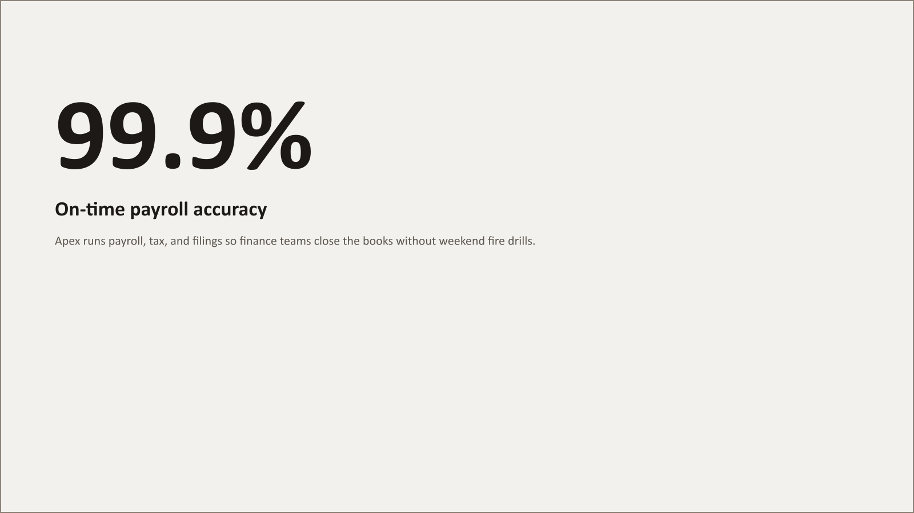
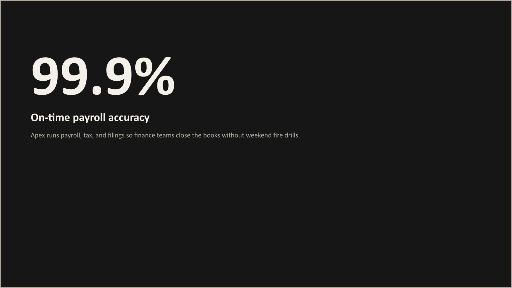
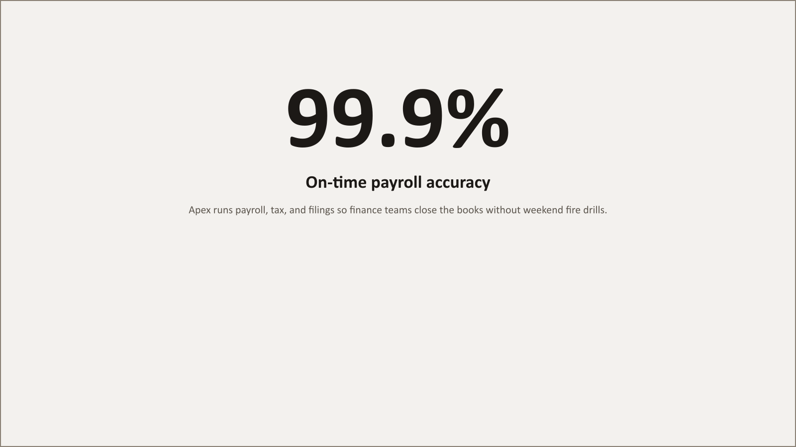
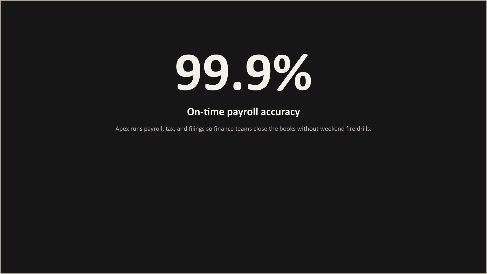
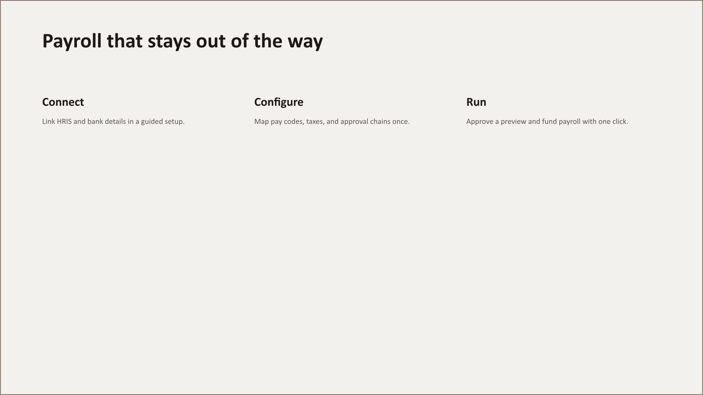
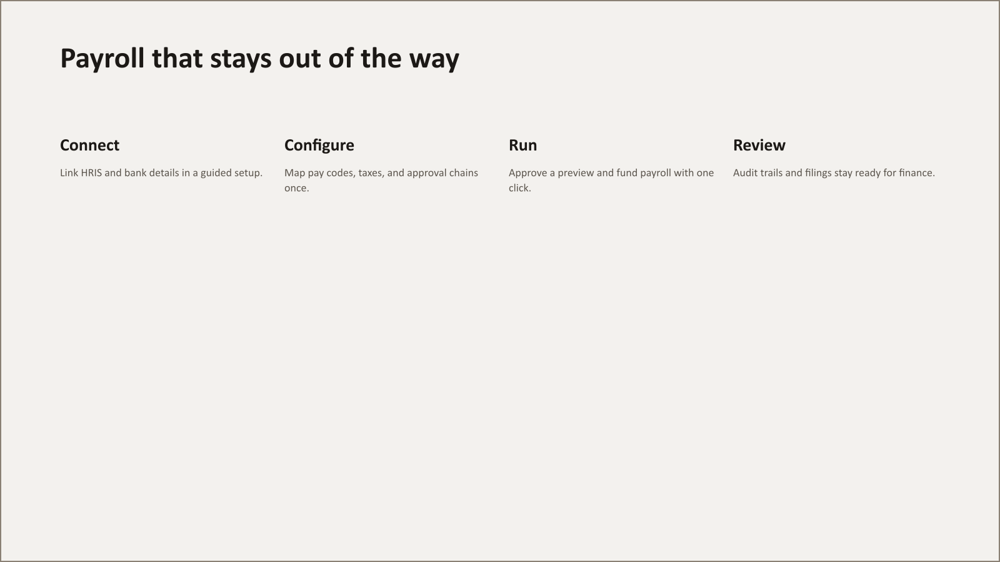
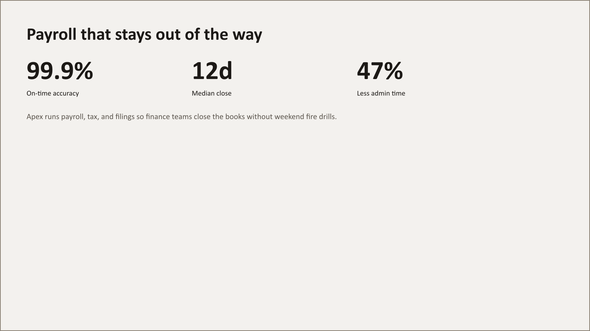
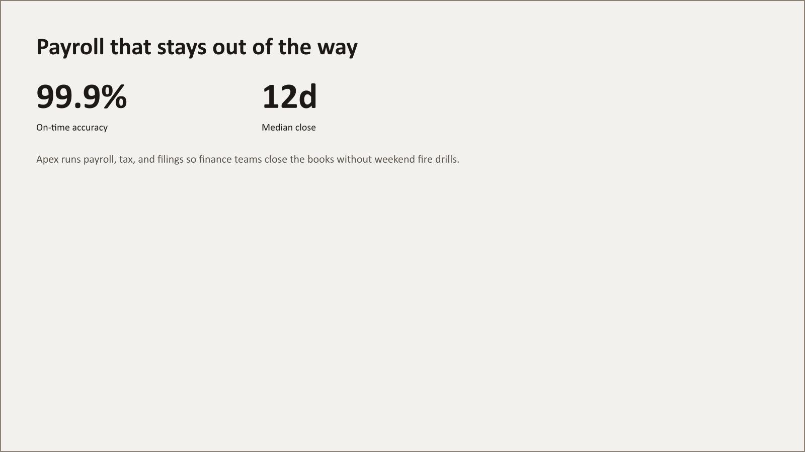

Composer gallery (36 slides)
corp-calibri · light-neutral (plus dark-neutral for cover, divider, big-number). Geometry fails: 0.
cover / word / light-neutral · geometry pass
cover / word / dark-neutral · geometry pass
cover / split / light-neutral · geometry pass
cover / split / dark-neutral · geometry pass
cover / full-bleed / light-neutral · geometry pass
cover / full-bleed / dark-neutral · geometry pass
agenda / numbered-list / light-neutral · geometry pass
agenda / two-column / light-neutral · geometry pass
split-copy / photo-left / light-neutral · geometry pass
split-copy / photo-right / light-neutral · geometry pass
split-copy / title-bottom-left / light-neutral · geometry pass
split-copy / photo-wide / light-neutral · geometry pass
split-copy / copy-over-band / light-neutral · geometry pass
statement / left / light-neutral · geometry pass
statement / centered / light-neutral · geometry pass
statement / with-kicker / light-neutral · geometry pass

big-number / left / light-neutral · geometry pass

big-number / left / dark-neutral · geometry pass

big-number / centered / light-neutral · geometry pass

big-number / centered / dark-neutral · geometry pass
big-number / with-photo / light-neutral · geometry pass
big-number / with-photo / dark-neutral · geometry pass
quote / plain / light-neutral · geometry pass
quote / portrait / light-neutral · geometry pass

process / three-step / light-neutral · geometry pass

process / four-step / light-neutral · geometry pass
team-grid / three / light-neutral · geometry pass
team-grid / four / light-neutral · geometry pass

stat-row / three-up / light-neutral · geometry pass

stat-row / two-up / light-neutral · geometry pass
divider / number / light-neutral · geometry pass
divider / number / dark-neutral · geometry pass
divider / accent-block / light-neutral · geometry pass
divider / accent-block / dark-neutral · geometry pass
close / plain / light-neutral · geometry pass
close / photo / light-neutral · geometry pass